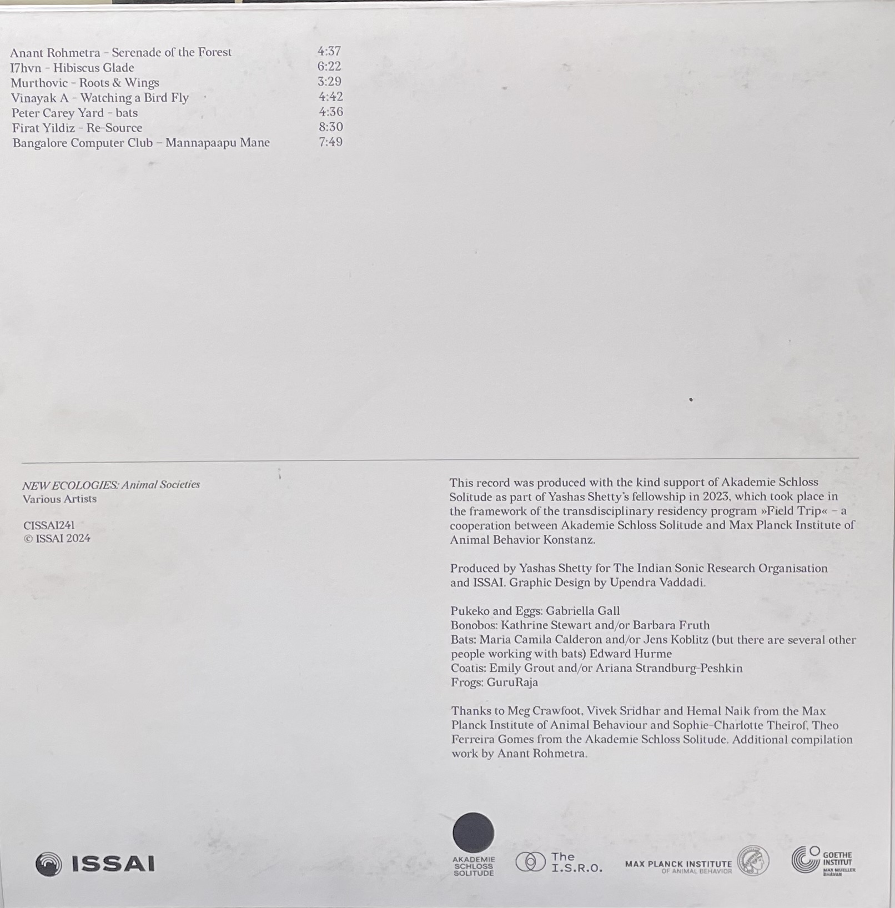
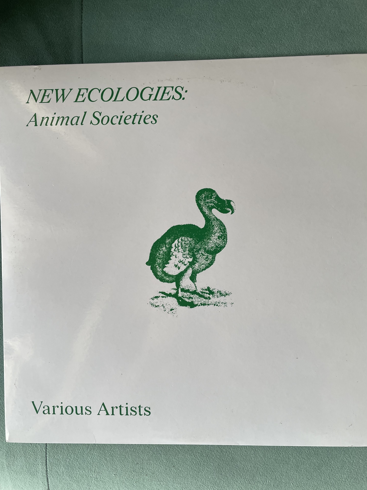

New Ecology is an Indo-German collaborative exploration blending field recordings of animals and birds from scientists at the Max Planck Institute of Animal Behaviour in Germany with music from producers and DJs from India and Germany. Released June 18, 2025.


Anant Rohmetra · I7hvn · Murthovic · Vinayak A · Peter Carey · Firat Yildiz · Banglroe Computer Club
Pukeko and Eggs: Gabriella Gall · Bonobos: Kathrine Stewart and Barbara Fruth · Bats: Maria Camila Calderon and Jens Koblitz (with Edward Hurme) · Coatis: Emily Grout and Ariana Strandburg Peshkin · Frogs: GuruRaja
Produced by Yashas Shetty for The Indian Sonic Research Organisation and ISSAI. Graphic Design by Upendra Vaddadi.
Produced with the kind support of Akademie Schloss Solitude as part of Yashas Shetty’s fellowship in 2023, which took place in the framework of the transdisciplinary residency program “Field Trip” — a cooperation between Akademie Schloss Solitude and Max Planck Institute of Animal Behavior Konstanz.